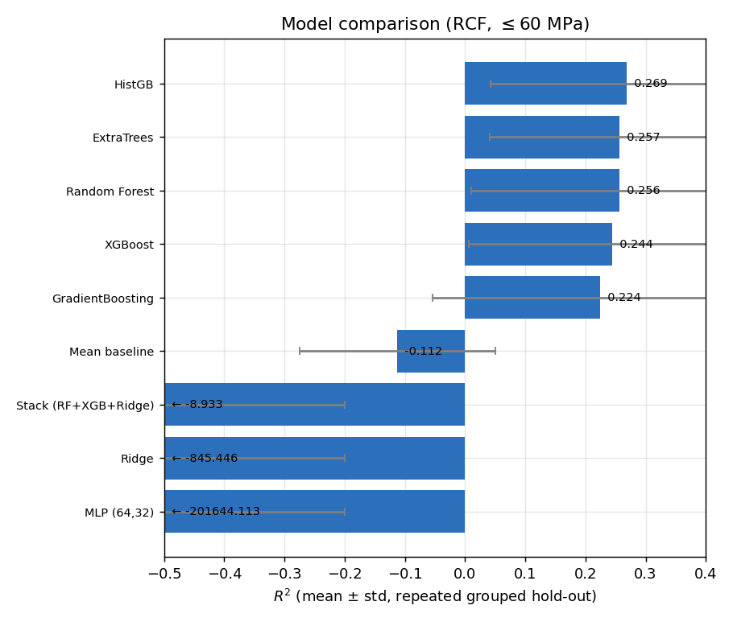
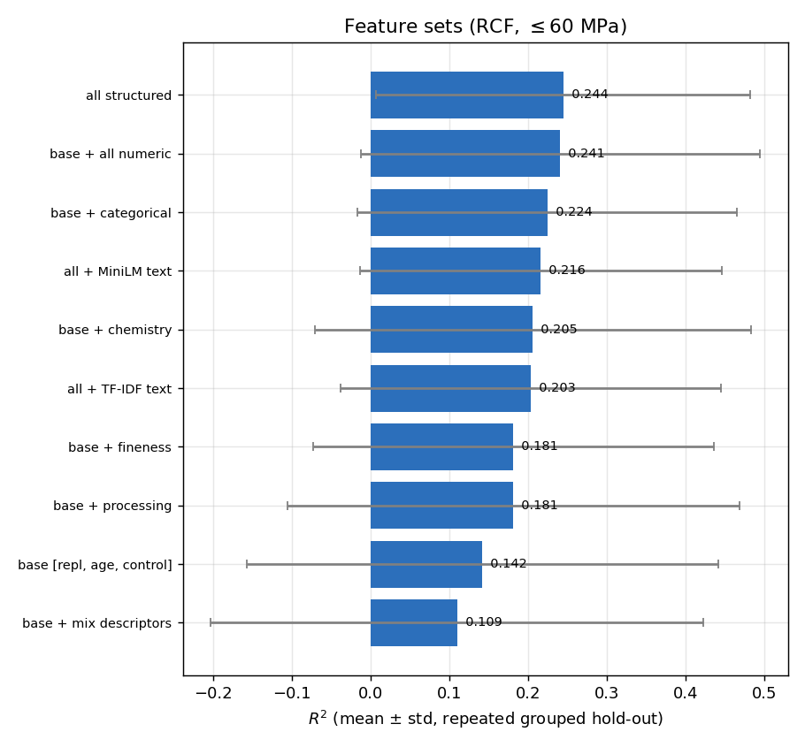
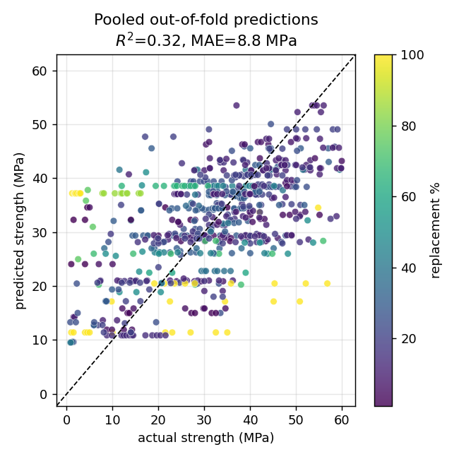
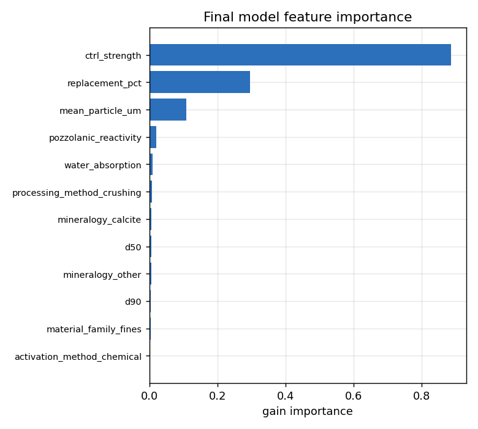
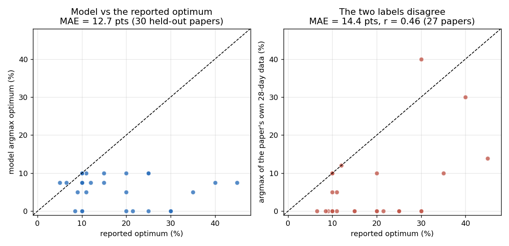

We restrict the recycled-concrete-fines (RCF) corpus to samples of 60 MPa or below and ask which prediction approach actually works, without assuming that the recipe found earlier for rice-husk ash (RHA) carries over. Nine machine-learning methods, ten feature sets, four ways of handling missing values and four physics priors were compared under paper-level grouped validation. The best model is HistGradientBoosting using the paper's own control strength, replacement level, curing age, categorical descriptors and fineness measurements, with strength required to rise with age and control strength: R² = 0.308 ± 0.187, MAE = 8.5 MPa. A large language model (gpt-oss:120b) was then given exactly the same training rows, test points and input columns. On equal terms the machine-learning model is clearly ahead (R² 0.789 vs 0.602). Optimal replacement level cannot be predicted from this corpus. Two conclusions differ from the RHA study: RCF genuinely benefits from the extra material descriptors that added only noise for RHA, and what decides accuracy is not the choice of gradient-boosting library but how strongly it is regularised — at least 20 samples per leaf.
The corpus holds 1825 parsed strength measurements from 85 papers. We drop every row measured above 60 MPa, control rows included, because the high-strength regime is outside the range of interest.
| Quantity | All samples | ≤ 60 MPa |
|---|---|---|
| Data points / papers | 1825 / 85 | 1675 / 83 |
| Rows with a resolved curing age | 1284 | 1165 |
| Modelling set: blends having a same-age control / papers | 823 / 44 | 688 / 41 |
| Spread of the target (standard deviation) | 18.1 MPa | 14.1 MPa |
The cut removes 150 rows from 27 papers and costs 3 papers in the modelling set.
Every model below is trained on those 688 rows and scored the same way: repeated grouped hold-out, 30% of papers held out, 40 repeats, so no paper ever appears in both training and test. Because the cut also narrows the spread of the target (18.1 → 14.1 MPa), R² values here are not comparable with those from the full-data study; RMSE and MAE, both in MPa, are.
Nine candidates, all on identical rows, features and splits.
| Model | R² | RMSE (MPa) | MAE (MPa) |
|---|---|---|---|
| HistGradientBoosting | 0.269 ± 0.227 | 11.30 | 8.60 |
| ExtraTrees | 0.257 ± 0.216 | 11.40 | 8.85 |
| Random Forest | 0.256 ± 0.246 | 11.37 | 8.66 |
| XGBoost | 0.244 ± 0.238 | 11.48 | 8.74 |
| GradientBoosting | 0.224 ± 0.278 | 11.59 | 8.75 |
| Mean baseline | −0.112 ± 0.163 | 14.08 | 11.56 |
| Stack (RF + XGB + Ridge) | −8.9 ± 56.5 | 17.80 | 11.50 |
| Ridge | −845 | 93.3 | 43.3 |
| MLP (64, 32) | −2.0 × 105 | 1036 | 393 |
The four tree ensembles sit within noise of one another: HistGradientBoosting leads and XGBoost — the winner on RHA — comes fourth, but the 0.025 between them is a ninth of the ±0.23 spread across splits, so the ordering means little on its own (see below). Ridge and the neural network fail outright: with sparse inputs and papers whose strength levels differ by an order of magnitude, an unconstrained linear or neural fit extrapolates wildly on unseen papers, and the stack inherits Ridge's failures. Only the tree ensembles beat predicting the corpus average.
The gap is not a property of the algorithms but of their defaults. HistGradientBoosting requires
at least 20 samples in a leaf; XGBoost's min_child_weight of 3 lets it split down to
about three. With 688 rows drawn from 41 papers, and whole papers held out, small leaves memorise
the specimen scatter of individual papers — RCF has many repeat specimens at the same
replacement level and age — which transfers to no other paper. Equalising that one setting
reverses the ranking:
| Configuration | R² | MAE (MPa) |
|---|---|---|
| XGBoost, min. 20 samples per leaf | 0.289 | 8.54 |
| HistGradientBoosting, min. 20 (its default) | 0.269 | 8.60 |
| XGBoost, min. 3 (its default) | 0.244 | 8.74 |
| HistGradientBoosting, min. 3 | 0.208 | 8.88 |
| XGBoost with explicit 255-bin histogram | 0.244 | 8.74 |
Histogram binning, the other common explanation, changes nothing: modern XGBoost already uses it by default. Tuned on equal footing — same feature set, same constraint, same 40 splits — the two libraries finish level, at R² = 0.309 ± 0.188 for XGBoost against 0.308 ± 0.187 for HistGradientBoosting. The lesson is to regularise heavily, not to prefer a particular library.
Feature groups added to the base inputs (replacement level, curing age, control strength), all using XGBoost so the rows are directly comparable.
| Feature set | R² | RMSE (MPa) | MAE (MPa) |
|---|---|---|---|
| all structured | 0.244 ± 0.238 | 11.48 | 8.74 |
| base + all numeric | 0.241 ± 0.254 | 11.49 | 8.75 |
| base + categorical | 0.224 ± 0.241 | 11.63 | 8.85 |
| all + MiniLM text embeddings | 0.216 ± 0.229 | 11.70 | 8.91 |
| base + chemistry | 0.205 ± 0.277 | 11.73 | 8.85 |
| all + TF-IDF text | 0.203 ± 0.241 | 11.80 | 9.02 |
| base + fineness | 0.181 ± 0.254 | 11.94 | 9.11 |
| base + processing | 0.181 ± 0.287 | 11.93 | 9.06 |
| base [replacement, age, control] | 0.142 ± 0.299 | 12.21 | 9.05 |
| base + mix descriptors | 0.109 ± 0.313 | 12.42 | 9.21 |


This is the clearest departure from the RHA study. There, the three base inputs were as good as anything and every added group merely added noise. Here, describing the powder genuinely helps: the base set alone reaches 0.142, and the material descriptors lift it to 0.244 — a larger gain than the gap between any two tree models. Text embeddings of the papers' free-text fields do not beat the structured columns. The likely reason is sample size: this modelling set has 41 papers against RHA's 21, enough to support more inputs.
A full architecture search (model × feature set × duplicate handling × monotone constraint; 40 configurations) confirms this and settles on a slightly leaner set: HistGradientBoosting with base + categorical + fineness at R² = 0.285, ahead of the same model on all structured features (0.269) and on the base set alone (0.266). Chemistry, favoured in the full-data study, does not survive the 60 MPa cut.
Yes — it is the single most valuable input, exactly as for RHA.
| Target framing | R² | RMSE (MPa) | Rows / papers |
|---|---|---|---|
| C: blend strength given the paper's own control | 0.244 ± 0.238 | 11.48 | 688 / 41 |
| A: absolute strength, no control supplied | −0.130 ± 0.216 | 15.59 | 1165 / 56 |
| B: strength as a ratio to the control | −0.162 ± 0.204 | — | 688 / 41 |
Without the control strength the model is worse than predicting the corpus average; with it, the problem becomes learnable. Predicting the ratio to the control does not work either. In the final model, control strength carries by far the largest importance (0.887, against 0.296 for replacement level). This is not leakage: the plain 0%-RCF mix can always be cast and tested first, so its strength is known before any prediction is needed.
| Missing values (XGBoost) | R² | RMSE | Physics prior | R² | RMSE |
|---|---|---|---|---|---|
| median imputation | 0.249 | 11.42 | monotone in age & control | 0.213 | 11.71 |
| native (no imputation) | 0.244 | 11.48 | plain | 0.142 | 12.21 |
| KNN imputation | 0.214 | 11.70 | log target + monotone | 0.118 | 12.29 |
| MICE imputation | 0.192 | 11.89 | log target | 0.116 | 12.36 |
Missing-value handling barely matters: letting the tree handle gaps natively and filling them with column medians are equivalent, while the more elaborate imputers are slightly worse. Requiring strength to rise with curing age and with the control strength is worth more than any other single choice, lifting R² from 0.142 to 0.213 on the base inputs; the constraint survives into the tuned model. Log-transforming the target hurts.
| Component | Choice |
|---|---|
| Model | HistGradientBoosting — depth 2, learning rate 0.03, 300 iterations, L2 = 3.0, min. 20 samples per leaf |
| Inputs (18) | replacement %, curing age, control strength; activation method, processing method, mineralogy, material family, pozzolanic reactivity; d10, d50, d90, mean particle size, specific surface, BET surface, Blaine, specific gravity, bulk density, water absorption |
| Constraint | strength non-decreasing in curing age and in control strength |
| Performance | R² = 0.308 ± 0.187 | RMSE = 11.02 MPa | MAE = 8.47 MPa |
| Mean baseline | R² = −0.112 | RMSE = 14.08 MPa | MAE = 11.56 MPa |
| Pooled 5-fold grouped | R² = 0.319, MAE = 8.82 MPa (single split; more optimistic) |


A tuned XGBoost with the same feature set and constraint is indistinguishable from this (R² = 0.309 ± 0.188 against 0.308 ± 0.187); either can be deployed, provided the minimum leaf size is kept large. The model explains about a third of the variation between held-out papers, with a typical error of 8.5 MPa against a target spread of 14.1 MPa. That is modest but honest, and part of the remaining error is irreducible from these columns: many (paper, replacement level, age) cells contain several distinct mixes whose treatment the corpus never records.
Six papers spanning the control-strength range (12 to 60 MPa) are held out — papers 51, 81, 37, 19, 80 and 91 — giving 59 test points; the remaining 35 papers (629 rows) are training data. Four of the six were also used in the earlier full-data benchmark; papers 27 and 44 had to be replaced because the 60 MPa cut leaves paper 27 with two rows and removes paper 44 entirely.
gpt-oss:120b (hosted, via Ollama) receives the 629 training rows as CSV inside one fixed prompt and returns a JSON array of 59 numbers. Decoding is greedy (temperature 0, fixed seed, top-k 1, top-p 1). The prompt was run 15 times; every answer was validated and retried when malformed, and all 15 runs eventually produced a usable answer (14 on the first attempt). Each call takes about 32 seconds.
| gpt-oss on the 59 held-out points | R² | RMSE (MPa) | MAE (MPa) |
|---|---|---|---|
| Single run (mean of 15 ± SD) | 0.204 ± 0.426 | 13.13 | 9.26 |
| worst / best individual run | −0.624 / 0.852 | — | — |
| Median of 5 runs (three separate blocks) | 0.560 / 0.666 / 0.464 | 10.14 / 8.83 / 11.19 | 6.76 / 5.46 / 7.53 |
| Median of all 15 runs | 0.602 | 9.34 | 6.29 |
A single run is unreliable: R² ranges from −0.62 to 0.85 across repetitions of the identical prompt, and a typical individual prediction shifts by about 9 MPa between runs. Taking the per-point median of several runs is therefore essential, and pooling all 15 lifts the score to 0.602.
Both methods were given exactly the same information, and this was enforced rather than assumed.
The rules below are recorded alongside the results in
pipeline_rcf/out_llm_le60/parity_manifest.json.
What each method received. The same 6 held-out papers and the same 59 test rows, in one fixed order; the same 629 training rows; and the same 18 input columns — the prompt's training CSV and its query lines contain exactly the columns the ML model is fitted on, and nothing else. Neither method sees any identifier: paper id, row id, mix id and data source are withheld from the prompt because the ML model never receives them, and predictions are matched by query order alone. The measured strength of a test row is shown to neither method.
| Method (identical inputs, identical 59 test points) | R² | RMSE | MAE | Repeatable? |
|---|---|---|---|---|
| HistGradientBoosting (the final model) | 0.789 | 7.03 | 5.52 | yes, identical every run |
| XGBoost, tuned identically | 0.807 | 6.71 | 5.04 | yes, identical every run |
| gpt-oss, median of 15 runs | 0.602 | 9.34 | 6.29 | within ≈ 2.5 MPa per point |
| gpt-oss, single run | 0.204 ± 0.426 | 13.13 | 9.26 | no |
The machine-learning model wins on equal terms — with either boosting library, which again finish level — and it is also deterministic and returns in milliseconds rather than 32 seconds. Per paper the two are close on four of the six and diverge on two: gpt-oss is better on papers 91 (MAE 2.9 vs 9.8) and 37 (2.6 vs 3.6), while the tree model is better on 19 (2.4 vs 4.5) and 80 (8.7 vs 15.4).
A separate diagnostic — deliberately not part of the comparison above — put the paper identifier back into the prompt. This is what earlier LLM benchmarks in this project did, while their ML counterparts never received that column.
| gpt-oss, same 59 test points | Single-run R² | Median-of-runs R² | Run-to-run spread |
|---|---|---|---|
| paper id hidden (parity, 15 runs) | 0.204 ± 0.426 | 0.602 | 9.1 MPa per point |
| paper id visible (diagnostic, 5 runs) | 0.668 ± 0.089 | 0.743 | 3.6 MPa per point |
The identifier carries no strength information, yet it tells the model which query rows belong to the same paper, letting it anchor each block on that paper's control strength. Without it the model sometimes confuses the blocks, once predicting about 14 MPa for a paper whose control strength is 47.7 MPa. A tree model cannot exploit such grouping at all, so supplying it to the LLM alone makes a comparison unfair — which is why the headline table withholds it, and why LLM-favourable margins reported elsewhere in this project should be read with that caveat.
No. Of the 41 papers in the modelling set, 30 report an optimum. Sweeping the final model across replacement levels and taking the best predicted strength gives MAE = 12.7 percentage points, against 8.9 for simply predicting the corpus-mean optimum. The predicted optima take only four distinct values spanning 0–10%, whereas the reported optima run from 5% to 45% (mean 18%, SD 10.6).

Two deeper problems make the target ill-posed on this corpus. The 27 papers that report both an optimum and a measurable best mix disagree by 14.4 percentage points on average (r = 0.46); and for 66% of papers the strongest mix actually measured is the 0% control, meaning RCF never improved strength, so an "optimum" becomes a matter of definition rather than a measured fact. We recommend not reporting an optimum-prediction model for RCF.
Partly. What transfers completely is the control strength — on both corpora it is what makes the problem learnable — and the value of physics constraints. What does not transfer is the rest: RCF rewards the material descriptors that RHA punished, because RCF has roughly twice as many papers, and it needs noticeably heavier leaf-size regularisation than RHA's settings provide. Running RHA's exact recipe here (XGBoost on the three base inputs with monotone constraints) scores R² = 0.213 against 0.285 for RCF's own best architecture, giving away about a quarter of the achievable score.
pipeline_rcf/09_ml_le60.py — builds the ≤ 60 MPa table and runs the ablation,
architecture search and tuning → pipeline_rcf/out_le60/.pipeline_rcf/10_llm_le60.py — prep builds the shared train/test tables
and the parity manifest, run calls gpt-oss, ml fits the final model on the
identical rows and columns, score aggregates →
pipeline_rcf/out_llm_le60/.pipeline/prompts/rcf_strength_le60_v2.txt (its SHA-256, the full
prompt hash and the model digest are logged with every call).out_le60/ablation.csv,
out_le60/architecture_search.csv, out_le60/best_model.txt and
out_llm_le60/.